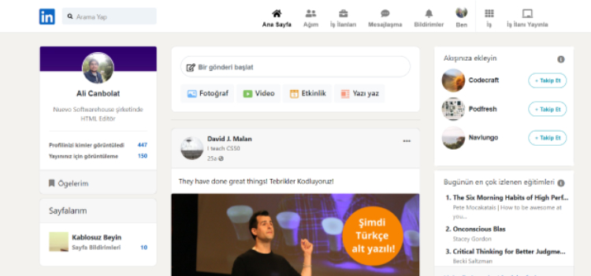
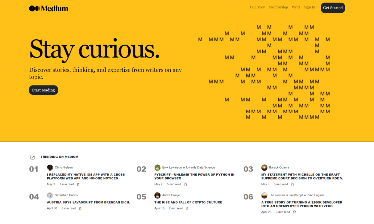

Hakkımda

Front-end yazılım geliştirme konusunda çalışmalarım bulunmaktadır. Javascript freamworklerinden olan Angular ve React üzerinden proje geliştirmeleri yapmaktayım. HTML ve CSS konusunda bilgi ve tecrübeye sahibim. Yeni geliştirilmiş dilleri ve yapıları araştırıp tecrübe kazanmayı kendime misyon edindim.
Lisanslar ve sertifikalar
Bootstrap ile Linkedin Clone
6 Mayıs 2022

Kullanılan Teknolojiler
Bootstrap ile Medium Clone
6 Mayıs 2022

Kullanılan Teknolojiler
- Bootstrap v4.6.0
- Font Awesome v5.15.1